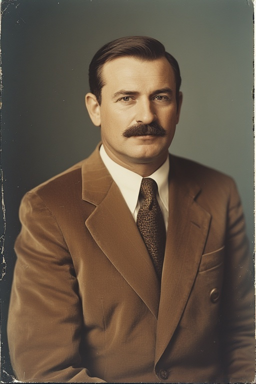
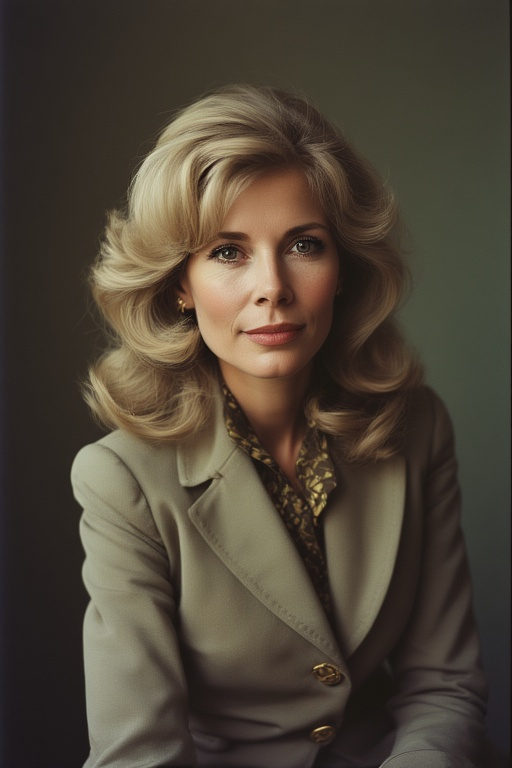

Mandat en cours
Anton Vorne

Le Paternalisme Unificateur
Homme de rigueur et de terrain, Anton Vorne incarne une présidence à hauteur d'homme. Figure d'autorité calme et inébranlable, il a su imposer un style nouveau au sommet de l'État : celui d'une austérité bienveillante. Loin des fastes, toujours vêtu avec une sobriété impeccable, le Président Vorne se veut le garant d'une Oslavie unie, où la méritocratie ne doit pas être synonyme de brutalité, mais d'ascension collective. Son mandat marque la volonté de réconcilier l'élite technocratique de Faellyne avec les réalités du "vrai pays".
L'Excellence du Mérite, la Force de l'Expérience
Issu de la classe moyenne laborieuse, Anton Vorne est l'exemple probant de la réussite républicaine. Sa réussite brillante au Diplôme Général d'Aptitude (DGA) lui ouvrait les portes des plus hautes administrations centrales. Pourtant, c'est en province qu'il choisit de forger son expérience.
Refusant de gouverner sans connaître, il consacre la première partie de sa carrière à l'administration territoriale. C'est au contact des zones rurales et des communautés minoritaires qu'il développe sa vision politique. Contrairement à ceux qui n'ont connu que les salons feutrés de la capitale, le Président Vorne connaît le prix de l'effort dans les régions délaissées. Cette légitimité du terrain est le socle de son autorité aujourd'hui incontestée.
Une Vision : L'État comme Famille
Fidèle aux valeurs de l'Oslavie Démocrate et Prospère (ODP), Anton Vorne y insuffle cependant une dimension sociale inédite. S'il respecte scrupuleusement les avis du Conseil Constitutionnel et la structure de nos institutions, il œuvre inlassablement pour que les minorités ethniques et les provinces reculées ne soient plus les oubliées de la croissance.
Sa doctrine, qualifiée de "Paternalisme Unificateur", repose sur un contrat moral simple entre l'État et le citoyen : la nation tend la main, à condition que l'individu fournisse l'effort nécessaire.
Elena Vorne : L'Humanisation de la Fonction
À ses côtés, Madame Elena Vorne joue un rôle capital. Ancienne plume éminente de la presse nationale, reconnue pour sa finesse d'analyse, la Première Dame ne se contente pas d'un rôle protocolaire. Conseillère privilégiée, elle œuvre au rapprochement entre la présidence et les familles oslaves.
C'est sous son impulsion que le Chef de l'État a ouvert les portes du Palais, montrant un visage plus chaleureux et accessible, cassant l'image traditionnelle de distance bureaucratique. Elle forme avec le Président un binôme indissociable, veillant à ce que la voix de la société civile résonne jusque dans le bureau présidentiel.

Portrait de la première dame Elena Vorne
Chronologie
- 15 Octobre 1928
Naissance à Valony (Province du Nord).
- 1946
Obtention du Diplôme Général d'Aptitude (DGA) à l'âge de 18 ans. Classé parmi les meilleurs nationaux.
- 1946 - 1950
Cursus à l'École Nationale d'Administration Oslave. Rédaction d'un mémoire de fin d'études remarqué : "XXX".
- 1950
Refus de l'affectation automatique aux Ministères de Faellyne. Début de sa carrière en tant que Secrétaire Administratif dans les provinces du nord.
- 1954
Mariage avec Elena Kosta, journaliste au Courrier National.
- 1965
Nomination au poste de Préfet. Il gagne le surnom de "XXX" pour sa propension à visiter chaque village de sa juridiction.
- 1975
Rappel à la capitale. Devient chargé de l'Aménagement du Territoire sous le président Marek Sov. Il s'oppose à plusieurs reprises aux projets de "modernisation forcée" et d'informatisation brutale prônés par les technocrates radicaux.
- 2 Mai 1982
Anton Vorne est élu 7ème Président du Second État d'Oslavie avec une large majorité, portée par le vote des campagnes et des classes moyennes.
- 11 Octobre 1982
Au nom de la "Tradition d'Honneur de l'Oslavie", le Président Vorne refuse l'extradition de Katerina Sorel. Il lui accorde l'asile politique immédiat, déclarant que "l'Oslavie ne livre pas la compétence à l'arbitraire". Cet acte de fermeté, bien que créant un froid diplomatique durable avec XXX, assoit l'autorité du Président sur la scène internationale.
- Janvier 1983
Lancement du "Pacte Rural". Priorité absolue au désenclavement des provinces métropolitaines.
- 15 Juin 1983
Début de la naturalisation exceptionnelle de Katerina Sorel.
- Mars 1984
Visite présidentielle dans le Protectorat de Kogan. Le Président y annonce le plan "XXX".
- Juillet 1984
Tensions aux frontières Est : Crise de la pointe d'Irogne
- 31 Décembre 1984
Le Président rompt avec le protocole rigide lors des vœux de fin d'année. Il apparaît entouré de son épouse et de ses proches, dans un salon modeste, pour un discours axé sur la solidarité intergénérationnelle, répondant ainsi à l'image de "vieux sage" que lui renvoie l'opposition progressiste.
Détails sur le Pacte Rural
Détails sur le plan XXX